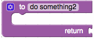
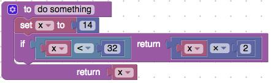
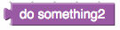

Function no return
This block creates a function that has no return. This function block can be named anything.

This block creates a function that has no return. This function block can be named anything.
This block creates a function that returns a variable. This function block can be named anything. 
The if return block needs to be located within a function block. The example below shows how it can be used. First, a function with return block, then a variable "x" is set equal to fourteen. Then the if return block checks if x is less than thirty-two then, return x multiplied by 2 and then the function is done running. Otherwise continue down the function. At the end of the function x is returned. The example function will never reach the second return statement. 
The call function no return block is used when you have created a function with no return. This block simply calls the function you have created.

The call function with return block is used when you have created a function with a return. This block simply calls the function you have created. 